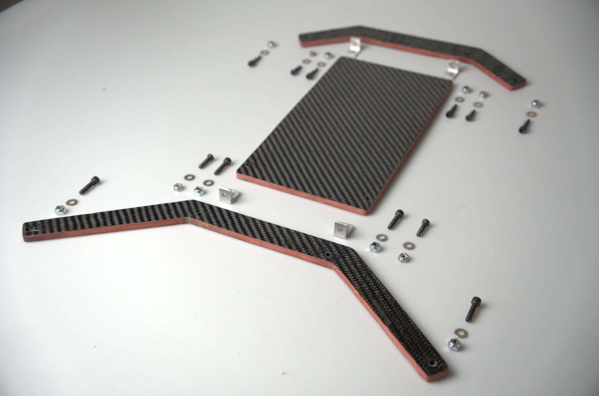
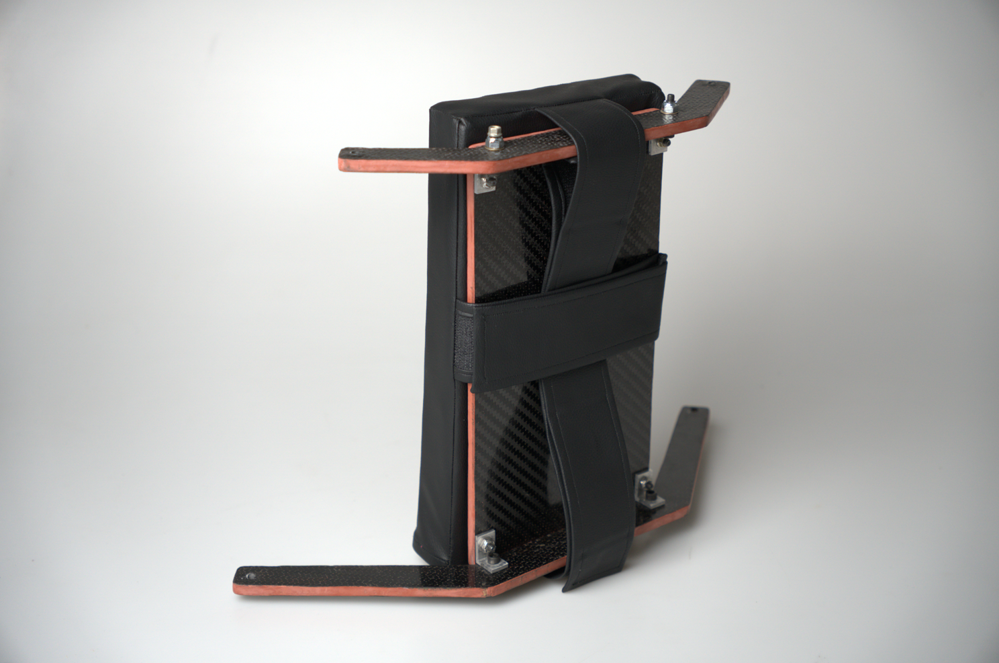

Domains
-
Design for Manufacturing (DFM)
Computer-Aided Engineering (CAE)
User Research
Ergonomic Testing
Fabrication
Tools
-
Solidworks
ANSYS FEA
CNC Machining
Carbon Fiber Layup
Welding
Waterjetting
Synopsis
-
Led the complete redesign of the carbon fiber headrest structure on a Formula SAE race car, achieving a weight reduction of 50%.

Project is ongoing, more details can be found on resume.
As one of the few industrial designers in an engineering club, I was tasked to lead the complete redesign of the carbon fiber headrest structure.
The result was a weight reduction of 50%, while increasing strength by 20%. I learned ANSYS structural FEA, collaborated extensively with interdisciplinary teams, and practiced DFM principles. All while figuring out the quirks of a new material—pre-preg carbon fiber—never before used in the headrest structure.
Why Carbon Fiber?
To keep the race car competitive, each component was designed to be as light as possible while still meeting the rules and regulations. The headrest must withstand up to 100kg of force from the vertical axis and up to 60kg from the sides, with calculations done by hand and later validated using ANSYS.
Designed to be maintained.
Repairability and servicability was a major concern when designing for a component that withstands wear and tear on the track. The disasembly process need to be simple to allow for easy part replacement.

Assembly or disassebly takes less than 2 minutes.


DFM was practiced for every design decision. Fabrication processes included carbon fiber layup, CNC machining, welding, ANSYS FEA stress analysis, and more.
Machining and Fabrication
Beyond manual machining, CNC milling was also used for the metal tabs.
Advanced Solidworks
To ensure manufacturability and accomodate different driver heights, the headrest was designed to be fully parametric and adjustable in relation to roll cage dimensions.
Ergonomic simulations. User testing was also done on a physical rig, and the feedback informed many subsequent design iterations.